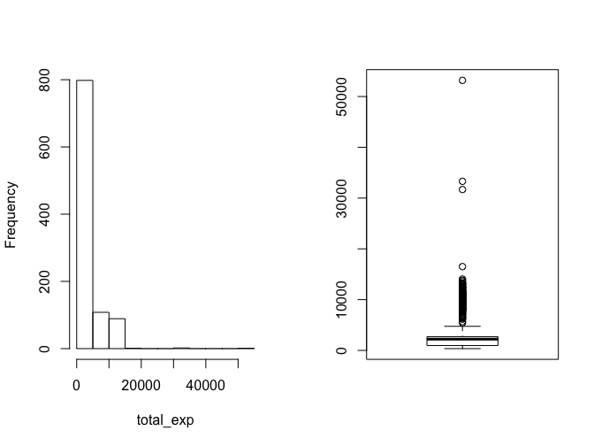
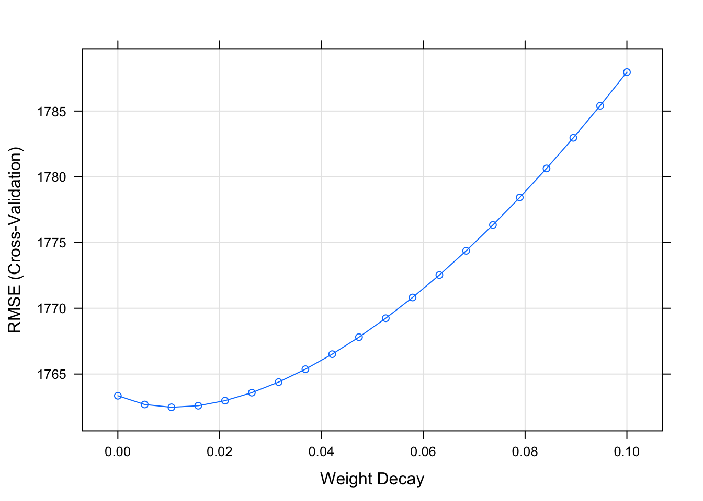
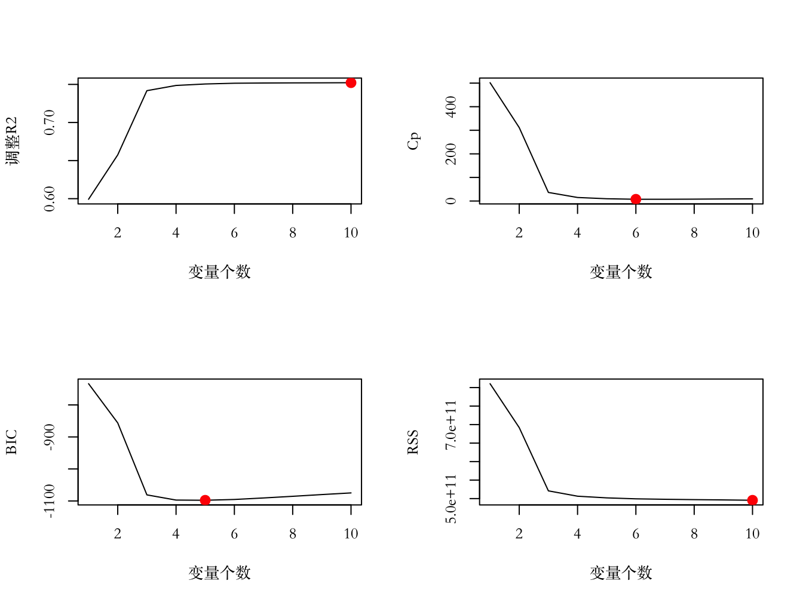

第10章 线性回归极其衍生
本章主要讲线性回归和它的衍生，顺序由易到难。先介绍普通线性回归（也称为最小二乘回归），这是非常简单的（可能是最简单的）有监督方法，相对于其它方法，普通线性回归可谓历史悠久，声名远扬。很多非理工科专业的小伙伴也都听过或者用过该模型。虽然和很多我们将要介绍的更新的模型比起来，普通线性回归太过低端，但它依旧是有用并且被广泛使用，此外，很多新模型其实是普通线性模型的衍生。因此理解普通线性模型对理解后面更加复杂的模型非常重要。之后我们会讲到两个收缩方法：岭回归和Lasso回归。和普通最小二乘估计相比，收缩方法可以将参数估计向0“收缩”，当观测量少时（相对于变量个数而言），这种方法有助于减少估计方差，稳定参数估计。接下来我们会介绍分层线性回归，和贝叶斯框架下的分层线性回归。R有强大的拟合线性模型的功能。我们先回顾一些基本知识，展示如何用R展示拟合相应模型，但是本章不会介绍所有实践中需要知道的知识。我们鼓励想进一步了解模型的读者参考我们在介绍该部分时列出的参考资料。本章中我们还是使用服装消费者数据解释线性模型。我们需要回答类似这样的问题：“那些变量是总消费量（线上和实体店消费额之和）的驱动因子？”这个问题的答案可以帮助公司知道需要将钱投到产品的哪个方面（如服装的设计，服装质量等）。
这里特别要注意的一点是，驱动因子不意味着原因。线性模型只假设变量之间存在关联性。如果某汽车客户问卷调查结果显示满意度和价格之间正相关，难道商家为了提高消费者满意度而刻意提高汽车价格？貌似不符合常识。更可能的情况是因为价格更高的汽车质量也更好，客户真正满意的是汽车的质量。因果关系在分析实践中是个很大的坑，在解释结果的时候一定要小心再小心，一定要将问题放在相应的语境中。
10.1 普通线性回归
虽然最小二乘线性回归看起来太过简单粗暴，但现在很多更复杂的模型其基本形式也是线性的。比如逻辑回归，就是对因变量的均值进行逻辑变换后再拟合线性模型。通常我们都将神经网络模型归于非线性模型，但神经网络中的每个潜变量都是某些预测变量的线性组合。日光之下，并无新事。在大量新技术不断涌入更新换代的今天，人的思维更加容易见树不见林。很多事物本质上是有相似性的，找到光怪陆离的表象下的实质是一种重要的能力。在学习了很多不同的方法之后应该退后一步，看看这些方法的演变联系，对背后的知识进行提取抽象，触及本质，时不时停下来问自己：这些模型背后的根本思想是什么？ 在R实现这些模型也类似，不同的模型在R中的表达方法都是模仿线性模型的拟合语句。因此，只要理解了如何使用R拟合，解释和诊断线性模型，你能够举一反三的应用其它更加复杂的模型。本节主要介绍用R中lm()拟合最小二乘线性模型，以及该函数中的不同选项。然后我们将会讲到线性模型的诊断方法，它们用于检测模型的假设是否成立，或者我们拟合的结果是否充分。
10.1.1 最小二乘线性模型
在线性模型中，
\[f(\mathbf{X})=\mathbf{X}\mathbf{\beta}=\beta_{0}+\sum_{j=1}^{p}\mathbf{x_{.j}}\beta_{j}\]
其中\(\mathbf{\beta}\)是长度为\(p+1\)的参数向量。这里的数学公式表达和之前6.1中介绍的一致。最小二乘估计就是选择\(\mathbf{\beta^{T}}=(\beta_{0},\beta_{1},...,\beta_{p})\)最小化下面残差平方和：
\[RSS(\beta)=\sum_{i=1}^{N}(y_{i}-f(\mathbf{x_{i.}}))^{2}=\sum_{i=1}^{N}(y_{i}-\beta_{0}-\sum_{j=1}^{p}x_{ij}\beta_{j})^{2}\]
我们还是从载入数据开始。
dat<-read.csv("/Users/happyrabbit/Documents/GitHub/DataScientistR/Data/SegData.csv")在我们开始之前，还需要对数据进行一些清理，删除错误的样本观测，消费金额不能为负数。
dat<-subset(dat,store_exp>0 & online_exp>0)我们将10个问卷调查变量当作自变量。
modeldat<-dat[,grep("Q",names(dat))]将实体店消费量和在线消费之和当作应变量。
# 得到总消费量=实体店消费+在线消费
modeldat$total_exp<-dat$store_exp+dat$online_exp我们先检查一下数据，看是不是有缺失值或者离群点：
# 这里没有展示输出结果
summary(modeldat)par(mfrow=c(1,2))
hist(modeldat$total_exp,main="",xlab="total_exp")
boxplot(modeldat$total_exp)
数据集modeldat中没有缺失值，但是明显有离群点，而且应变量total_exp分布明显偏离正态。我们删除离群点，然后对应变量进行对数变换。
我们用之前数据预处理章节介绍的Z分值的方法查找并删除离群点。这里不重复解释，不明白的读者可以返回复习相应的章节。
y<-modeldat$total_exp
# 求Z分值
zs<-(y-mean(y))/mad(y)
# 找到Z分值大于3.5的离群点，删除这些观测
modeldat<-modeldat[-which(zs>3.5),]这里我们先不对应变量进行对数变换，之后在回归函数的公式里对应变量进行变换。接下来检查变量的共线性：
library(corrplot)
correlation<-cor(modeldat[,grep("Q",names(modeldat))])
corrplot.mixed(correlation,order="hclust",tl.pos="lt",upper="ellipse")Figure 10.1: 自变量相关矩阵图
由图10.1 可以看到，变量之间有很强的相关性。我们用之前在预处理章节中提到的删除高度相关变量的算法，设置阈值为0.75：
library(caret)
highcor<-findCorrelation(correlation,cutoff=.75)
modeldat<-modeldat[,-highcor]现在我们可以拟合线性模型。标准的模型公式表达是在“~”号的左边指定因变量，右边指定自变量。“.”表示数据集modeldat中除了因变量之外的所有变量都被当作自变量。这里我们没有考虑交互效应，如果要添加Q1和Q2的交互效应，只要在“~”右边加上“Q1*Q2”即可。注意下面的代码中我们对原始变量进行了对数变换（log(total_exp)）。
lmfit<-lm(log(total_exp)~.,data=modeldat)
summary(lmfit)##
## Call:
## lm(formula = log(total_exp) ~ ., data = modeldat)
##
## Residuals:
## Min 1Q Median 3Q Max
## -1.17494 -0.13719 0.01284 0.14163 0.56227
##
## Coefficients:
## Estimate Std. Error t value Pr(>|t|)
## (Intercept) 8.098314 0.054286 149.177 < 2e-16 ***
## Q1 -0.145340 0.008823 -16.474 < 2e-16 ***
## Q2 0.102275 0.019492 5.247 1.98e-07 ***
## Q3 0.254450 0.018348 13.868 < 2e-16 ***
## Q6 -0.227684 0.011520 -19.764 < 2e-16 ***
## Q8 -0.090706 0.016497 -5.498 5.15e-08 ***
## ---
## Signif. codes: 0 '***' 0.001 '**' 0.01 '*' 0.05 '.' 0.1 ' ' 1
##
## Residual standard error: 0.2262 on 805 degrees of freedom
## Multiple R-squared: 0.8542, Adjusted R-squared: 0.8533
## F-statistic: 943.4 on 5 and 805 DF, p-value: < 2.2e-16从模型结果总结中我们可以看到各个自变量的参数估计（Estimate列）、标准差（Std. Error），t统计量（t value）和p值（Pr(>|t|)）。在输出的底部包含了残差标准误，即RMSE（Residual standard error），\(R^2\)（Multiple R-squared）和调整后的\(R^2\)（Adjusted R-squared），模型的F统计量（F-statistic）以及相应F检验的显著性p值（p-value）。
- 关于p值的讨论
谈到p值，不能不提美国统计协会在2016年2月发表的关于P值的声明 “Position on p-values: context, process, and purpose” (Ronald L. Wassersteina 2016) ，统计之都有一篇对该声明的中文总结1。关于p值弊端的讨论在统计学领域已经不是新鲜事。其中一些抨击言辞比较激烈的是 Siegfried：
这是科学中最肮脏的秘密：使用统计假设检验的“科学方法”建立在一个脆弱的基础之上。——ScienceNews（Siegfried, 2010）
假设检验中用到的统计方法……比Facebook隐私条款的缺陷还多。——ScienceNews（Siegfried, 2014）
尽管争议已经持续了很久，但这是第一次统计协会对该话题给出郑重的声明，其主要目的不是解决该问题，而是对这些批评和讨论作一个回应，讨论发表一些关于p值的普遍共识，唤起大家对科学研究可重复性的重要性。声明中概括了关于p值的6个准则：
- P值可以表达的是数据与一个给定模型不匹配的程度。
- P值并不能衡量某条假设为真的概率，或是数据仅由随机因素产生的概率。
- 科学结论、商业决策或政策制定不应该仅依赖于P值是否超过一个给定的阈值。
- 合理的推断过程需要完整的报告和透明度。
- P值或统计显著性并不衡量影响的大小或结果的重要性。
- P值就其本身而言，并不是一个非常好的对模型或假设所含证据大小的衡量。
在文章末尾列举了一些其他替代手段，其中之一就是报告置信区间而非p值。 回到当前的例子，这里我们不去讨论参数估计的对应p值，而是使用各个参数估计的置信区间。在R中可以用下面代码得到置信区间：
confint(lmfit,level=0.9)## 5 % 95 %
## (Intercept) 8.00891811 8.18771037
## Q1 -0.15986889 -0.13081186
## Q2 0.07017625 0.13437445
## Q3 0.22423576 0.28466333
## Q6 -0.24665434 -0.20871330
## Q8 -0.11787330 -0.06353905上面的输出就是参数的90%置信区间。其中level=0.9将置信度设置为0.9。
拟合线性模型是非常容易的，以致于很多分析师拟合了模型之后不考虑模型是否合理，直接撰写结果报告。其实我们可以很容易用R从不同方面检查模型的拟合情况和假设条件。下面的几个小节中我们将介绍一些常用的线性模型诊断方法。
10.1.2 回归诊断
拟合线性模型是非常容易的，以致于很多分析师拟合了模型之后不考虑模型是否合理，直接撰写结果报告。其实我们可以很容易用R从不同方面检查模型的拟合情况和假设条件。下面的几个小节中我们将介绍一些常用的线性模型诊断方法。我们希望需要最小二乘估计（OLS）同时也是最优线性无偏估计（BLUE）。换句话说，我们希望得到的估计的期望即为真实值（无偏），且最小化残差方差（最优）。根据高斯-马尔可夫定理（Gauss-Markov theorem），OLS在下面条件满足时是BLUE:
- 自变量（\(\mathbf{x_{.j}}\)）和随机误差（\(\mathbf{\epsilon}\)）不相关，即：\(cov(\mathbf{x_{.j},\epsilon})=0\) 对 \(\forall j=j\in1...p\)
- 随机误差均值为0：\(E(\mathbf{\epsilon|X})=0\)
- 随机误差方差一致且相互独立：\(Var(\mathbf{\epsilon})=\sigma^{2}I\)，其中\(\sigma\)是正实数，\(I\)是\(n\times n\)的单位矩阵
下面介绍4种图形诊断。
残差图（Residuals vs Fitted）
残差图分析法是一种直观、方便的分析方法。它以残差\(\epsilon_{i}\)为纵坐标，以样本拟合值为横坐标画散点图（也可以绘制横坐标为任意自变量的残差散点图）。正常情况下残差分布应该是随机的。我们要检查残差图的如下几个方面：- 残差是否在0附近分布
- 残差分布是否随机，如果呈现出某种特定分布模式（如：随横坐标的增大而增大或减小）的话，说明当前模型关系的假设不充分
- 残差是否存在异方差性，比如随着拟合值增大残差分布方差增加，这就说明残差分布有异方差性。如前所述，当存在异方差时，参数估计值虽然是无偏的，但不是最小方差线性无偏估计。由于参数的显著性检验是基于残差分布假设的，所以在该假设不成立的情况下该检验也将失效。如果你用该回归方程来预测新样本，效果很可能极不理想。
Q-Q图（Norm Q-Q）
Q-Q图是一种正态分布检测。对于标准状态分布，Q-Q图上的点分布在Y=X直线上，点偏离直线越远说明样本偏离正态分布越远。
标准化残差方根散点图（Scale-Location）
和残差图类似，横坐标依旧是样本拟合值，纵坐标变为了标准化残差的绝对值开方。
Cook距离图（Cook’s distance）
该图用于判断观测值是否有异常点。一般认为 当D<0.5时认为不是异常值点；当D>0.5时认为是异常值点。
对回归结果应用plot()函数可以得到不同的图形诊断。
par(mfrow=c(2,2))
plot(lmfit,which=1)
plot(lmfit,which=2)
plot(lmfit,which=3)
plot(lmfit,which=4)Figure 10.2: 一般线性回归残差图
从回归的四个图形结果（图10.2）来看：
- 残差图：数据点都基本均匀地分布在直线y=0的两侧, 无明显趋势，满足线性假设。
- 标准Q-Q图：图上的点基本都在y=x直线附件，可认为残差近似服从正态分布；
- 标准化残差方根散点图：若满足不变方差假设，则在该图中水平线周围的点应随机分布，最高点为残差最大值点。该图显示基本符合方差齐性的要求。
- Cook距离图：最大的Cook距离为0.05左右，可以认为没有异常值点。
10.1.3 离群点，高杠杆点和强影响点
关于一般线性回归，最好检查下是否有观测会强烈影响线性模型拟合结果。如果一个或者几个观测对模型结果有决定性的影响，那么用这些观测得到的模型是具有误导性的。这里我们介绍这三类观测点的检测：离群点，高杠杆点和强影响点。
- 离群点
刚才介绍的Cook距离图，以及之前讲到的Z分值都可以用来检测线性模型中的离群点。注意，Z分值仅仅是针对应变量观测而言，和使用的模型无关，即其并未考虑模型的拟合情况。下面我们用car包(John Fox and Weisberg 2011)中的outlierTest()函数对拟合模型对象检测是否存在离群点，和Z分值方法鉴别的离群点不同，这里的离群点指的是那些模型预测效果不佳的观测点，通常有很大的、或正或负的残差，正残差说明模型低估了响应值，负残差说明高佑了响应值。这里使用的是Bonferroni离群点检验，该检验也可作用于广义线性模型。对于一般线性模型使用的是t检验，对于广义线性模型使用的是正态检验。关于该检验相关知识见 (Williams 1987; J. Fox 2008; Cook and Weisberg 1982; S. Weisberg 2014)。
library(car)
outlierTest(lmfit) #Bonferroni离群点检验## rstudent unadjusted p-value Bonferonni p
## 960 -5.295504 1.533e-07 0.00012432outlierTest()函数是根据单个最大（或正或负）残差值的显著性来判断是否有离群点，若不显著，则说明数据集中没有离群点，若显著，则建议删除该离群点，然后再检验是否还有其他离群点存在。这里我们删除第960个被认为是离群点的观测。
outlierTest(lmfit)## rstudent unadjusted p-value Bonferonni p
## 960 -5.295504 1.533e-07 0.00012432# 这里数据modeldat的行名是原数据集的行号，所以是字符类型
# 找到相应的观测
idex<-which(row.names(modeldat)=="960")
# 删除离群观测
modeldat=modeldat[-idex,]接下来我们再拟合一次模型然后检测看看是否还有离群点：
lmfit<-lm(log(total_exp)~.,data=modeldat)
outlierTest(lmfit)##
## No Studentized residuals with Bonferonni p < 0.05
## Largest |rstudent|:
## rstudent unadjusted p-value Bonferonni p
## 155 -3.818112 0.00014483 0.11731可以看到现在没有检测出显著离群点。
高杠杆值点是与其他预测变量有关的离群点，即它们是由许多异常的预测变量组合起来的，与响应变量值没有关系。 高杠杆值的观测点可通过帽子矩阵的值（hat statistic）判断。对于一个给定的数据集，帽子均值为\(p/n\)，其中p是模型估计的参数数目（包含截距项），n是样本量。一般来说，若观测点的帽子值大于帽子均值的2或3倍，则可认定为高杠杆值点。
10.2 收缩方法
之前特征工程的章节中讲到各种变量选择方法，其中我们对内嵌法没有详细展开。内嵌法是将特征选择的过程内嵌如建模的过程，它是学习器自身自主选择特征，这里我们要讲的收缩方法就属于内嵌法。我们可以通过对模型参数进行限制或者规范化来达到变量选择的效果，这些方法能将一些参数估计朝着0收缩。使用收缩方法提高模型拟合表现的原理可能不那么显而易见，但是收缩方法的效果是非常好的，这也是我最常使用的方法，尤其是项目要求使用可以解释的模型时。收缩方法不仅仅限于线性回归，之后我们在讲判别分析时会介绍将lasso用于逻辑回归。最常用的收缩方法是岭回归（ridge regression）、lasso以及弹性网络（elastic net）。弹性网络结合了岭回归和lasso中的罚函数，可以说是它们的一般化版本。
对于一般线性回归，在标准模型假设下最小二乘估计号称是方差最小无偏估计，这里的方差最小是在所有线性无偏估计当中最小。之间在介绍误差来源时讲过MSE是方差和偏差的一个组合。当预测变量存在高度相关时，估计量的方差可能会非常大，偏差的微小增加可能使得方差大幅度下降，因此对于回归模型中的多重共线性问题，有偏模型也可能得到具有竞争力的MSE取值。构建有偏回归模型的一种方法是在误差平方和的基础上加上一个惩罚项。
10.2.1 岭回归
回顾最小二乘模型，它的目的是寻找参数的估计，以使得误差平方（RSS）和达到最小：
\[RSS=\Sigma_{i=1}^{n}(y_{i}-\beta_{0}-\Sigma_{j=1}^{p}\beta_{j}x_{ij})^{2}\]
岭回归(H. A 1970)和最小二乘回归有类似之处，不同在于优化的方程略有变化。岭回归寻找的是优化下面方程的\(\hat{\beta}^{R}\)：
\[\Sigma_{i=1}^{n}(y_{i}-\beta_{0}-\Sigma_{j=1}^{p}\beta_{j}x_{ij})^{2}+\lambda\Sigma_{j=1}^{p}\beta_{j}^{2}=RSS+\lambda\Sigma_{j=1}^{p}\beta_{j}^{2}\]
其中\(\lambda >0\)是需要额外估计的调优参数。上式是在两个不同的准则间权衡。和最小二乘回归类似，岭回归考虑了最小化RSS，但其还有一个称为收缩惩罚的项\(\lambda\Sigma_{j=1}^{p}\beta_{j}^{2}\)，该项在参数\(\beta_{1},...,\beta_{p}\)趋近于0的时候变小，因此有向0收缩参数估计的用处。调优参数\(\lambda\)用来调整这两个部分对最后参数估计的影响。当\(\lambda=0\)时，惩罚项对结果没有影响，这时岭回归等同于最小二乘回归。当\(\lambda\rightarrow\infty\)时，惩罚项的影响增大，岭回归系数估计趋近于0。这里惩罚只针对\(\beta_{1},...,\beta_{p}\)，对截距项\(\beta_{0}\)并没有惩罚。每个\(\lambda\)值都对应一组参数估计，通过尝试不同的调优参数值，找到最优的模型。通常使用交互校验来选择调优参数，关于交互校验，我在之前基础建模技术那一章节已经讲过了。
有许多R函数可以进行岭回归。MASS包中的lm.ridge()函数，以及elasticnet包中的enet()函数，如果你知道调优参数的值，可以直接使用这两个函数拟合岭回归模型。如果你要对参数进行调优，最方便的函数是caret包中的train()函数。还是以服装消费者数据为例展示这些函数的使用，自变量为10个问卷调查问题以及年龄、性别、收入和房产情况，应变量为总体花销（在线花销和实体店花销的总和）。
dat<-read.csv("/Users/happyrabbit/Documents/GitHub/DataScientistR/Data/SegData.csv")
# 对数据进行一些清理，删除错误的样本观测，消费金额不能为负数
dat<-subset(dat,store_exp>0 & online_exp>0)
# 将10个问卷调查变量当作自变量
trainx<-dat[,grep("Q",names(dat))]
# 将实体店消费量和在线消费之和当作应变量
# 得到总消费量=实体店消费+在线消费
trainy<-dat$store_exp+dat$online_exp先用train()函数对参数进行调优。首先设置交互校验和参数调优范围，这里我们使用10层交互校验。岭回归在回归系数的平方和前加调优参数，因此最好对自变量进行标准化，这条准则适用于所有罚函数包含回归系数的方法。这里因为10个问题分值的范围是一致的，是否标准化并不太影响分析结果，但保险起见，建议大家在用此类方法前都先进行标准化：
ctrl <- trainControl(method = "cv", number = 10)
ridgeGrid <- data.frame(.lambda = seq(0, .1, length = 20))
set.seed(100)
ridgeRegTune <- train(trainx, trainy,
method = "ridge",
## 用不同的罚函数值来拟合模型
tuneGrid = ridgeGrid,
trControl = ctrl,
## 中心化和标度化变量
preProc = c("center", "scale"))
ridgeRegTune## Ridge Regression
##
## 999 samples
## 10 predictor
##
## Pre-processing: centered (10), scaled (10)
## Resampling: Cross-Validated (10 fold)
## Summary of sample sizes: 899, 899, 899, 899, 899, 899, ...
## Resampling results across tuning parameters:
##
## lambda RMSE Rsquared
## 0.000000000 1763.347 0.7896421
## 0.005263158 1762.683 0.7898448
## 0.010526316 1762.469 0.7899844
## 0.015789474 1762.589 0.7900829
## 0.021052632 1762.975 0.7901534
## 0.026315789 1763.584 0.7902040
## 0.031578947 1764.388 0.7902401
## 0.036842105 1765.368 0.7902652
## 0.042105263 1766.510 0.7902819
## 0.047368421 1767.804 0.7902919
## 0.052631579 1769.243 0.7902967
## 0.057894737 1770.821 0.7902971
## 0.063157895 1772.532 0.7902938
## 0.068421053 1774.373 0.7902876
## 0.073684211 1776.339 0.7902788
## 0.078947368 1778.429 0.7902677
## 0.084210526 1780.638 0.7902547
## 0.089473684 1782.964 0.7902399
## 0.094736842 1785.406 0.7902237
## 0.100000000 1787.959 0.7902060
##
## RMSE was used to select the optimal model using the smallest value.
## The final value used for the model was lambda = 0.01052632.训练出的模型调优参数为0.01，对应RMSE和\(R^{2}\)分别为1762.469和80%。从交互校验的RMSE结果图中可以看到，随着调优参数增加，RMSE有一个略微减小然后增加的过程。

训练出调优参数之后，很多函数都可以用来拟合岭回归。这里展示如何使用elasticnet包中的enet()函数：
ridgefit = enet(x = as.matrix(trainx), y = trainy, lambda = 0.01,
# 这里设置将自变量标准化
normalize = TRUE)这里注意ridgefit只指定了岭回归的罚函数，由于弹性网模型同时具有岭回归和lasso罚函数，我们需要进一步通过predict()函数得到相应的拟合系数和拟合结果。针对enet对象的predict()函数可以通过参数s和mode来指定在lasso罚参数下的拟合，这里我们需要“屏蔽”lasso的罚函数参数，这可以通过设置s = 1 和 mode = "fraction"得到。我们在之后讲lasso的时候会进一步讲解：
ridgePred <- predict(ridgefit, newx = as.matrix(trainx),
s = 1, mode = "fraction", type = "fit")注意上面type = "fit"返回的结果是一个列表，其中fit项包含预测结果：
names(ridgePred)## [1] "s" "fraction" "mode" "fit"head(ridgePred$fit)## 1 2 3 4 5 6
## 1290.4697 224.1595 591.4406 1220.6384 853.3572 908.2040如果要得到参数拟合结果，需要在predict()函数中设定type="coefficients"：
ridgeCoef<-predict(ridgefit,newx = as.matrix(trainx),
s=1, mode="fraction", type="coefficients")返回的结果依旧是一个列表，其中coefficients项包含各个变量的参数估计：
# 这里不显示结果
RidgeCoef=ridgeCoef$coefficients岭回归和原始最小二乘回归相比优势在于偏差和方差之间的权衡。之前讲过，一般线性回归中的最小二乘估计在无偏估计中是最优的，但是通常估计方差会很大。这意味着训练集数据的微小变化可能导致参数估计较大的变化。而岭回归估计就是通过牺牲一点点“无偏性”，换取估计方差的减小。因此，岭回归适合在普通最小二乘回归参数估计方差很大的情况下使用。
10.2.2 Lasso
虽然岭回归可以将参数估计值向0进行收缩，但对于任何调优参数值，它都不能将系数取值变为严格的0。尽管某些参数估计值变得非常小以至于可以忽略，但事实上岭回归并没有进行变量选择。这可能对预测精确度来说不是问题，但却对模型解释提出了挑战，尤其在变量个数大的时候。一种流行的用来替代岭回归的模型是“最小绝对收缩与选择算子”模型，通常被称为lasso(R 1996)。这个模型使用了与岭回归类似的惩罚项，lasso的回归参数估计\(\hat{\beta}_{\lambda}^{L}\)最小化如下方程：
\[\Sigma_{i=1}^{n}(y_{i}-\beta_{0}-\Sigma_{j=1}^{p}\beta_{j}x_{ij})^{2}+\lambda\Sigma_{j=1}^{p}|\beta_{j}|=RSS+\lambda\Sigma_{j=1}^{p}|\beta_{j}|\]
lasso和岭回归很相似，唯一的不同在于罚函数。岭回归中的\(\beta_{j}^{2}\)在lasso中变为\(|\beta_{j}|\)。用统计术语讲就是岭回归是在结构风险最小化的正则化因子上使用模型参数向量的二阶范数形式，lasso使用的是一阶范数形式。lasso不仅将参数估计向0收缩，当调优参数足够大时，一些参数估计将直接缩减为零，这可以达到特征提取的作用。这样一来，lasso回归的结果更易于解释。和其它有调优参数的模型类似，lasso也需要通过交互校验进行参数调优。下面我们展示在R中如何进行调优和拟合。
先用train()函数对参数进行调优。首先设置交互校验和参数调优范围，这里我们使用10层交互校验。建议大家在用此类方法前都先进行标准化：
ctrl <- trainControl(method = "cv", number = 10)
lassoGrid <- data.frame(fraction = seq(.8, 1, length = 20))
set.seed(100)
lassoTune <- train(trainx, trainy,
method = "lars",
## 用不同的罚函数值来拟合模型
tuneGrid = lassoGrid,
trControl = ctrl,
## 中心化和标度化变量
preProc = c("center", "scale"))
lassoTune## Least Angle Regression
##
## 999 samples
## 10 predictor
##
## Pre-processing: centered (10), scaled (10)
## Resampling: Cross-Validated (10 fold)
## Summary of sample sizes: 899, 899, 899, 899, 899, 899, ...
## Resampling results across tuning parameters:
##
## fraction RMSE Rsquared
## 0.8000000 1778.817 0.7872676
## 0.8105263 1776.714 0.7875679
## 0.8210526 1774.842 0.7878315
## 0.8315789 1773.090 0.7880823
## 0.8421053 1771.293 0.7883477
## 0.8526316 1769.551 0.7886105
## 0.8631579 1767.924 0.7888577
## 0.8736842 1766.442 0.7890909
## 0.8842105 1765.127 0.7893044
## 0.8947368 1763.960 0.7894958
## 0.9052632 1762.974 0.7896597
## 0.9157895 1762.165 0.7897985
## 0.9263158 1761.540 0.7899101
## 0.9368421 1761.212 0.7899582
## 0.9473684 1761.076 0.7899771
## 0.9578947 1761.121 0.7899701
## 0.9684211 1761.350 0.7899381
## 0.9789474 1761.839 0.7898641
## 0.9894737 1762.492 0.7897668
## 1.0000000 1763.347 0.7896421
##
## RMSE was used to select the optimal model using the smallest value.
## The final value used for the model was fraction = 0.9473684.训练出的模型调优参数为0.95，对应RMSE和\(R^{2}\)分别为1761和79%，和之间岭回归几乎相同。从交互校验的RMSE结果图中可以看到，随着调优参数增加，RMSE有一个减小然后增加的过程。
plot(lassoTune)
lasso模型可以用许多不同的函数进行拟合。lars包中的lars()函数，elasticnet包的enet()函数，glmnet包的glmnet()函数都可以拟合lasso，它们的语法非常相似。我们还是使用enet()函数，其要求自变量必须是一个矩阵对象，因此要将数据框trainx转换成矩阵。此外，预测变量在建模之前需要中心化和标准化，函数中的normalize参数可以自动完成这一过程lambda参数控制了岭回归的罚参数，因此将该值设为0即为拟合lasso模型。
lassoModel<- enet(x = as.matrix(trainx), y = trainy, lambda = 0, normalize = TRUE)lasso模型在进行预测之前不需要进行指定：
lassoFit <- predict(lassoModel, newx = as.matrix(trainx),s = .95, mode = "fraction",type = "fit")类似，这里type = "fit"返回的结果是一个列表，其中fit项包含预测结果：
head(lassoFit$fit)## 1 2 3 4 5 6
## 1371.6160 308.6984 702.2026 1225.5508 832.0466 1028.9785如果要得到参数拟合结果，需要在predict()函数中设定type="coefficients"：
lassoCoef<-predict(lassoModel,newx = as.matrix(trainx),s=0.95, mode="fraction", type="coefficients")返回的结果依旧是一个列表，其中coefficients项包含各个变量的参数估计：
# 这里不显示结果
LassoCoef=lassoCoef$coefficients这类规则化方法的研究现在非常活跃。很多学者将lasso模型嫁接到其它方法上，比如线性判别(Clemmensen L 2011)，偏最小二乘回归(C. H and S 2010)。但由于一阶范数不是连续可导的，lasso回归的计算过程更复杂。很多学者对相应的优化算法进行了研究，其中最重要的改进是Bradley Efron等(Efron B 2014)提出的最小角回归(Least Angle Regression［LARS］)算法，该算法很好地解决Lasso的计算问题，尤其在维度高的时候。
10.2.3 弹性网络
弹性网络是lasso的一般化版本(Z. H and T 2005)，该模型结合了两种罚函数，参数估计最小化如下方程：
\[\Sigma_{i=1}^{n}(y_{i}-\hat{y}_{i})^{2}+\lambda_{1}\Sigma_{j=1}^{p}\beta_{j}^{2}+\lambda_{2}\Sigma_{j=1}^{p}|\beta_{j}|\]
lasso对应的估计方差较大，而岭回归又没有特征选择的功能，弹性网络的优点在于利用了岭回归的罚函数，同时又有lasso的特征选择功能。Zou和Hastie(Z. H and T 2005)指出该模型能够更有效的处理成组的高度相关变量。
还是先用train()函数对参数进行调优。首先设置交互校验和参数调优范围，这里我们使用10层交互校验，并且对变量标准化：
enetGrid <- expand.grid(.lambda = seq(0,0.2,length=20), .fraction = seq(.8, 1, length = 20))
set.seed(100)
enetTune <- train(trainx, trainy,
method = "enet",
tuneGrid = enetGrid,
trControl = ctrl,
preProc = c("center", "scale"))训练出的模型对应的lasso调优参数为0.958，岭回归调优参数为0.01。相应RMSE和\(R^{2}\)分别为1760和79%，在这里这三种方法的效果并没有很大的不同。这里展示如何使用elasticnet包中的enet()函数：
enetfit = enet(x = as.matrix(trainx), y = trainy, lambda = 0.01,
# 这里设置将自变量标准化
normalize = TRUE)和之前一样，enetfit只指定了岭回归的罚函数，由于弹性网模型同时具有岭回归和lasso罚函数，我们需要进一步通过predict()函数得到相应的拟合系数和拟合结果。针对enet对象的predict()函数可以通过参数s和mode来指定在lasso罚参数下的拟合，和之前不同的是，这里我们对应的lasso的罚函数参数设置为s = 0.958 和 mode = "fraction"：
enetPred <- predict(enetfit, newx = as.matrix(trainx),
s = 0.958, mode = "fraction", type = "fit")注意上面type = "fit"返回的结果是一个列表，其中fit项包含预测结果。如果要得到参数拟合结果，需要在predict()函数中设定type="coefficients"：
enetCoef<-predict(ridgefit,newx = as.matrix(trainx),
s=0.958, mode="fraction", type="coefficients")返回的结果依旧是一个列表，其中coefficients项包含各个变量的参数估计。
10.3 知识扩展：Lasso的变量选择功能
可能有人会问从岭回归到lasso，只是罚函数从二阶范数变成一阶范数，为什么lasso就能够将参数估计收缩成0而岭回归不能呢？要回答这个问题，我们先看下lasso和岭回归分别对应的另一版本的等价优化方程。对于lasso而言，优化下面两个方程是等价的：
\[\Sigma_{i=1}^{n}(y_{i}-\beta_{0}-\Sigma_{j=1}^{p}\beta_{j}x_{ij})^{2}+\lambda\Sigma_{j=1}^{p}|\beta_{j}|=RSS+\lambda\Sigma_{j=1}^{p}|\beta_{j}|\]
\[\underset{\beta}{min}\left\{ \Sigma_{i=1}^{n}\left(y_{i}-\beta_{0}-\Sigma_{j=1}^{p}\beta_{j}x_{ij}\right)^{2}\right\} ,\ \Sigma_{j=1}^{p}|\beta_{j}|\leq s\]
也就是说，对每个调优参数\(\lambda\)的取值，都存在相应的\(s\)值，使得上面两个方程优化后得到的参数估计相同。类似的，对于岭回归，下面两个方程等价：
\[\underset{\beta}{min}\left\{ \Sigma_{i=1}^{n}\left(y_{i}-\beta_{0}-\Sigma_{j=1}^{p}\beta_{j}x_{ij}\right)^{2}\right\} ,\ \Sigma_{j=1}^{p}\beta_{j}^{2}\leq s\]
\[\Sigma_{i=1}^{n}(y_{i}-\beta_{0}-\Sigma_{j=1}^{p}\beta_{j}x_{ij})^{2}+\lambda\Sigma_{j=1}^{p}\beta_{j}^{2}=RSS+\lambda\Sigma_{j=1}^{p}\beta_{j}^{2}\]
10.4 广义线性模型压缩方法及glmnet包
10.5 分层线性回归
我们已经讨论过简单线性模型，下面讨论该模型的扩展分层线性模型。什么时候需要使用分层模型呢？需要考虑分层结构的常见情况有两种。（1）当你的数据有嵌套结构，这是指一些观测可能属于更高一层级单位。比如在教育学分析当中通常需要研究学生的学习情况，同一所学校或者同一班级的学生相似度更高，这里我们就需要考虑学生学习情况的个体观测可能嵌套在班级，或者学校这个更高一层级单位中。市场营销中，地理位置通常是一个更高的层极单位。北上广的消费者和一些二三线城市的消费者可能不同，东南沿海和东北地区的消费者差异可能更大。这些情况中我们都需要考虑分层结构。（2）还有一种情况是针对纵向数据。比如对一些人年收入连续10年的观测，那么研究观测就该考虑个人的随机效应。类似的还有我们的航空公司满意度调查数据，每个受访者针对每项对3个航空公司进行评分，这里也需要考虑受访者的个体随机效应，可能的情况是有的人倾向于给高分，有的人倾向于给低分，这样的倾向和问卷问题以及哪家航空公司无关。
References
Ronald L. Wassersteina, Nicole A. Lazara. 2016. “Position on P-Values: Context, Process, and Purpose.”
Fox, John, and Sanford Weisberg. 2011. “An R Companion to Applied Regression.” Sage.
Williams, D. A. 1987. “Generalized Linear Model Diagnostics Using the Deviance and Single Case Deletions.” Applied Statistics 36: 181–191.
Fox, J. 2008. “Applied Regression Analysis and Generalized Linear Models.” Sage.
Cook, R. D., and S Weisberg. 1982. Residuals and Influence in Regression. Chapman; Hall.
Weisberg, S. 2014. Applied Linear Regression. Applied Linear Regression. Fourth Edition. Wiley.
A, Hoerl. 1970. “Ridge Regression: Biased Estimation for Nonorthogonal Problems.” Technometrics 12 (1): 55–67.
R, Tibshirani. 1996. “Regression Shrinkage and Selection via the Lasso.” Journal of the Royal Statistical Society Series B (Methodological) 58 (1): 267–88.
Clemmensen L, Witten D, Hastie T. 2011. “Sparse Discriminant Analysis.” Technometrics 53 (4): 406–13.
H, Chun, and Kele S. 2010. “Sparse Partial Least Squares Regression for Simultaneous Dimension Reduction and Variable Selection.” Journal of the Royal Statistical Society: Series B (Statistical Methodology) 72 (1): 3–25.
Efron B, Johnstone I, Hastie T. 2014. “Least Angle Regression.” The Annals of Statistics 32 (2): 407–99.
H, Zou, and Hastie T. 2005. “Regularization and Variable Selection via the Elastic Net.” Journal of the Royal Statistical Society, Series B, 67 (2): 301–20.